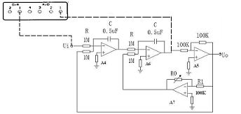
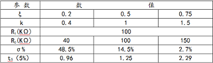
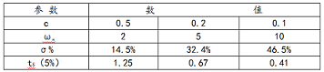

1．研究二阶系统的两个重要参数：阻尼比ξ和无阻尼自然频率ωnn 对动态性能的影响。
2．学会根据系统阶跃响应曲线，确定传递函数。
二阶系统模拟电路图
系统特征方程为T2s2+KTs+1=0，其中T=RC，K=R0/R1。根据二阶系统的标准形式可知，ξ=K/2，通过调整K 可使ξ获得希望值。
TAP-2 型控制理论模拟实验装置
数字万用表
1．二阶系统ξ和系统性能指标的关系。通过改变K，使ξ获得0.2，0.5，0.75等值，在输入端加同样幅值的阶跃信号， 观察过渡过程曲线，记下tS、σ%，将实验值和理论值进行比较。实验数据记录表格如下：
2．二阶系统ωn和系统性能指标的关系。通过改变K，使ξ=0.5,取T=0.1秒，0.2 秒， 0.5 秒，测出tS，σ%，比较三条阶跃响应曲线的异同。
2．二阶系统ωn和系统性能指标的关系。通过改变K，使ξ=0.5,取T=0.1秒，0.2 秒，0.5 秒，测出tS，σ%，比较三条阶跃响应曲线的异同。
1．画出实验线路，写出原始测量数据。
2．根据记录的阶跃响应曲线的特征，在同一张方格纸上描绘不同ξ值的响应曲线。
3．列表比较理论值和实际值，对误差进行分析。
4．对实验中的现象正确描述与分析。重点讨论二阶系统ωn、ξ和系统指标的关系（σ%、tS）
1．每次改变参数，须在关断实验装置电源后进行；
2. 建议将DA 通道1作为阶跃输入，AD 采样口的1 通道接到实验线路的输出端。
3. 实验曲线上任意点坐标（幅值、时间），可通过鼠标双击该点获取。
4. 若在采样过程中出现停止采样的现象，可先终止采样，在重新开始或关闭采样软件再重新启动采样软件。